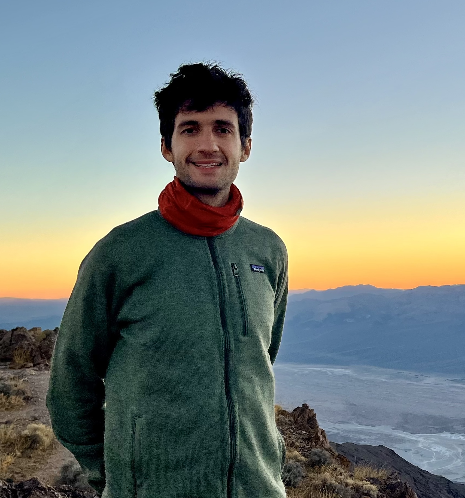

I am a cosmologist specializing in the data analysis of spectroscopic survey like the Dark Energy Spectroscopic Instrument (DESI). My research focuses on understanding the fundamental properties of our Universe, from its origins to its ultimate fate, by measuring the large-scale structure of the cosmos.
After completing my Ph.D. at the Département de Physique des Particules (CEA/IRFU, Université Paris-Saclay), I joined the Lawrence Berkeley National Laboratory as a Postdoctoral Fellow. My works combine novel statistical methods with the most advanced cosmological data ever collected to probe the origin of the Universe and the physics of inflation. I have dedicated the last five years tracking the Primordial non-Gaussianity (PNG) with the DESI data. In particular, I obtained the best constraints on local-PNG with large-scale structure so far using the first DESI data release (Chaussidon et al. 2024).
When not exploring the cosmos, I enjoy outdoor activities and sports such as biking any type of bicycle, running any type of trails, backpacking in the wilderness, or water sports. I particularly enjoy the San Francisco Bay area roads for biking 🚴 and the cool pacific waters for surfing 🏄!
Conduct independent research in the cosmology group of the LBNL focused on the analysis of large-scale structure data from the Dark Energy Spectroscopic Instrument (DESI).
Laboratory: Département de Physique des Particules (CEA/IRFU)
Title: "Studying inflation with quasars from the DESI spectroscopic survey"
Supervisor: Christophe Yèche
Major: Space Science & Earth Observation, Minor: Complex systems and simulation.
CGPA: 1st year: 3.86, 2nd year: 3.81, 3rd year: 4.1
Master Thesis (5 months): "Quasar Target Selection and imaging systematic mitigation for the upcoming DESI survey" under the supervision of Christophe Yèche at Département de Physique des Particules (CEA/IRFU).
Master's Degree (M2 NPAC) in nuclear physics, particle physics, astroparticles and cosmology.
Rank: 1/28
Master Internship (3 months): "Modeling the contributions of Damped Lyman-alpha Systems to the autocorrelation function of the Lyman-alpha forests" under the supervision of Julien Guy at Lawrence Berkeley National Laboratory.
Advanced undergraduate classes in Mathematics, Physics and Informatics.